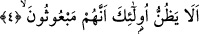

yapmıyorsa bu âyette kınanan kimse gibi olmuş olur.
et-Te’vilatu’n-Necmiyye’de ifâde olunduğuna göre Allah bu âyette itâatında ve
ibâdetinde eksik davrananlara, rahmete ve merhamete gelince bunu tam olarak talep
edenlere işâret ediyor. Bunlar Allah’tan almaya geldiğinde rızık ölçeklerini tam olarak
doldurmakta, Allah Teâlâ’ya itâat ve ibâdet sunmaya geldiğinde ibâdet ve itâat ölçeğini
eksik ölçmektedirler. İşte asıl zarar, bu zarardır.
Kâşânî’nin görüşüne göre Allah burada “adâlet” demek olan hakîkî terazideki
eksiltmeye ve bu adâlet terazisiyle tartılan nesnelerin de ahlak ve amel olduğuna işâret
ediyor. Eksiltenler ise nefislerinin kemâlâtını gözönüne aldıklarında kendilerini halktan
üstün görüyorlar ve bu kemâlâtlarını çok görüp ucb (kendini beğenme) ve tekebbür
(böbürlenme) ile haklarından daha fazla ilmî ve amelî fazilet ızhar ederek haklarını
arttırıyorlar. Kendi kemâlâtlarına, insanların kemâlâtını kıyas ettiklerinde onlarınkini
hakir görüyorlar. Her iki durumda adâlete riâyet etmiyorlar. Çünkü nefislerinin hazları
ve insanlara üstün olma muhabbeti peşindedirler. Onların bu durumu, “yapmadıklarıyla
övülmek istiyorlar” (Al-i İmran 3/188) âyet-i kerimesinde ifâde edilen duruma
benziyor.
Fakir (Bursevî)’nin kanâatine göre âyet-i kerimede tevhid-i hakîkî noktasında kasır
olan nefsin hâline işâret vardır. Bu kasır nefse, ruh hakîkî tevhidi verdiğinde nefs
noksan ve kusurlu olduğu için bu tevhidi kaybediyor. Üstelik o teraziye de girmiyor;
çünkü terazinin karşı kefesine konulacak bir mukavil yok. Her kim bunu teraziye koyup
tartmaya kalkarsa şanını eksilttiği gibi kendi nefsinin şanını da eksiltir. Ama tevhid-i
resmiye gelince nefis bunu ruhtan tam olarak alır. Çünkü o nefsin hakkıdır. Bundan
başkada nasibi yoktur.
4. Onlar düşünmezler mi ki (hesap vermek için) diriltilecekler.
“Onlar”, bu korkunç, çirkin vasıfları taşıyan mutaffifûn zannetmezler mi ki ne kadar
büyük ve ne kadar korkunç olaylarla dolu olduğu âşikâr olan büyük bir günde
“diriltilecekler”.
Âyetin başında yer alan “elâ” tenbih edatı değildir. Çünkü tenbih edatından sonra
gelen söz müsbet olur, oysa burada menfidir. Yine tenbih edatı olan “elâ”
hazfedildiğinde mânâ bozulmaz. Bir örnek verelim: “Dikkat et onlar sarhoşlukları
içinde bocalıyorlar” âyetinde “elâ” edatını attığımızda mânâ bozulmuyor; yine onların
sarhoşluk içinde bocaladıkları anlamı duruyor. Halbuki bizim okuduğumuz âyette
“elâ”yı atarsak mânâ bozuluyor. Şu halde buradaki elâ ifâdesi istifhâm-ı inkâri
hemzesiyle olumsuzluk lâ’sından ibarettir. Bazı âlimler bu “elâ”nın zan üzere bir teklif
ve bir teşvik olduğunu söylemişlerdir.